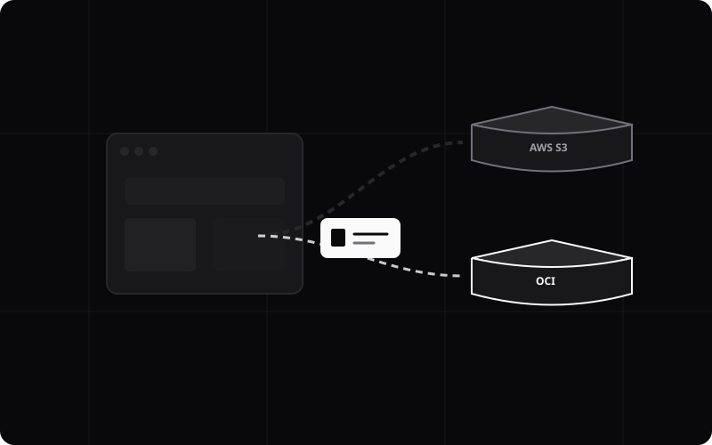

A lightweight desktop app for AWS S3 and OCI Object Storage. Select your region, click Connect — your buckets appear instantly. Upload and download with native OS file dialogs.

Switch between Amazon S3 and Oracle Cloud Infrastructure Object Storage with a single click.
Reads directly from ~/.aws/credentials. Your keys never leave your machine.
All AWS and OCI regions pre-populated. Select your region and OCI endpoint auto-fills.
Upload and download use your system's native file picker — secure and familiar.
Connect and your buckets appear as clickable tiles. Browse objects in a file-explorer view.
Built with Tauri v2 — under 10 MB, no bundled browser engine. Pure Rust backend.
Add your AWS or OCI keys to ~/.aws/credentials. The app reads them automatically — no UI setup needed.
# ~/.aws/credentials [default] aws_access_key_id = AKIA... aws_secret_access_key = ... [oci] aws_access_key_id = <OCI Customer Secret Key ID> aws_secret_access_key = <OCI Customer Secret Key>
Pick the AWS or OCI tab, choose your region from the dropdown. For OCI, the S3-compatible endpoint auto-fills — just enter your tenancy namespace.
Click Connect — your buckets appear. Click a bucket to browse its objects. Hover over any file to reveal the download button, or click Upload to pick a local file via your OS dialog.
Free, open-source, and built for developers who work with object storage every day.
Download Vault Drop ExplorerWindows 64-bit · Free forever · No telemetry